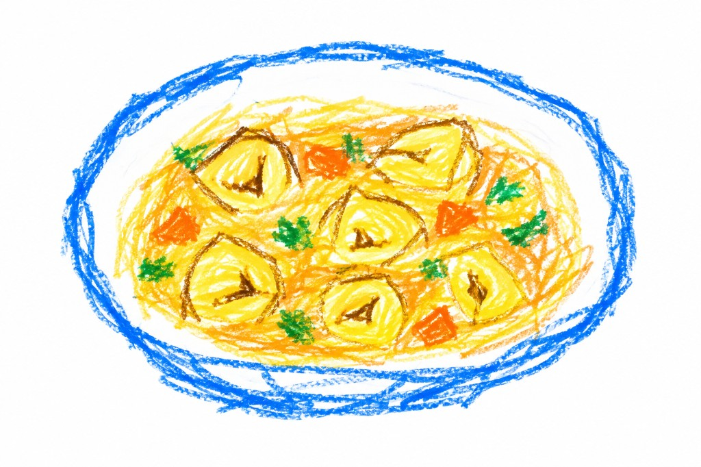

Insalata di seppie e patate
Secondi, per 4 persone.
Ingredienti
- 600 g di anelli di seppia o di seppioline
- 5 patate a pasta bianca
- 200 g di piselli sgranati
- 200 g di fave novelle sgranate
- 2 limoni
- 1 ciuffetto di prezzemolo
- olio extravergine di oliva
- sale
- pepe in grani
Preparazione
- Sciacqua bene gli anelli di seppia, o le seppioline, e falle cuocere per 20 minuti in acqua bollente salata e acidulata con una fettina di limone e 2 cucchiai del suo succo.
- Lava e raschia bene le patate, quindi falle lessare in acqua bollente salata. Scolale, falle raffreddare, poi sbucciale e tagliale a tocchetti.
- Sciacqua i piselli e le fave, poi sbollentali in acqua salata per 10 minuti. Scolali e passali subito sotto l'acqua fredda corrente per fermare la cottura.
- In un'insalatiera riunisci gli anelli di seppia ben scolati e, ancora caldi, i tocchetti di patata, le fave e i piselli. Aggiungi il prezzemolo mondato e tritato.
- Condisci con sale, pepe macinato al momento, abbondante succo di limone filtrato e olio. Mescola bene.
- Distribuisci l'insalata nei piatti, decora a piacere con fettine di limone e fili di erba cipollina, quindi servi.